Tataouine
Authenticité et silence du Sahara
À propos de Tataouine
Le Gouvernorat de Tataouine est situé dans l'extrême sud-est de la Tunisie. Son nom est d'origine berbère et signifie « sources d'eau ». C'est une vaste région, caractérisée par ses paysages désertiques et son riche patrimoine géologique et archéologique, notamment des fossiles de dinosaures.
Emplacement
Tataouine est située dans l'arrière-pays désertique, bordée au nord par les gouvernorats de Médenine et Kébili, et à l'est, au sud par la Libye et à l'ouest et au sud par l'Algérie. Elle est souvent considérée comme la porte d'entrée principale pour les excursions dans le désert tunisien et sur la route des Ksours.
Histoire
L'histoire de Tataouine est marquée par sa position stratégique en tant qu'ancien point de passage caravanier. Durant la période coloniale française, la ville était connue pour son bagne militaire, une référence qui a donné naissance à l'expression française « aller à Tataouine », signifiant se rendre dans un lieu très éloigné. La région est également riche en vestiges de l'architecture berbère, avec de nombreux greniers fortifiés (ksours).
Caractéristiques
- Patrimoine Architectural : La région est célèbre pour ses nombreux ksours (greniers collectifs fortifiés) et ses villages berbères de montagne, comme Chenini et Douiret, qui témoignent d'une architecture unique et d'un mode de vie ancestral.
- Sites Géologiques : Des découvertes récentes de fossiles de dinosaures ont fait de Tataouine un site d'intérêt majeur pour la géologie et l'archéologie.
- Ressources Naturelles : Le gouvernorat dispose de ressources naturelles diversifiées, incluant du pétrole, du gaz et des eaux souterraines.
- Culture : La culture locale est animée, notamment par le Festival international des ksour sahariens.
Top Places à Visiter
1. Ksar Ouled Soltane
Un impressionnant grenier fortifié berbère à plusieurs étages datant du XVe siècle, entouré de cours intérieures. L'entrée est gratuite et la vue est magnifique.
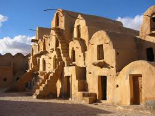
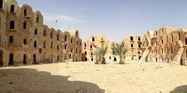
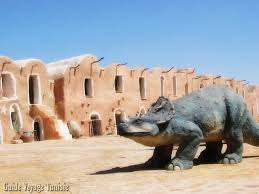
2.Mosquée des Sept Dormants (Chenini)
Située dans le village berbère de Chenini, cette mosquée est un joyau architectural entouré de montagnes, chargée de mystère et d'histoire.
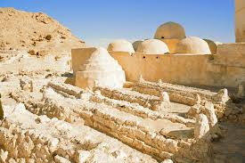
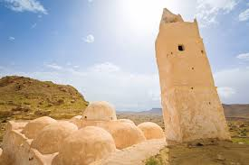
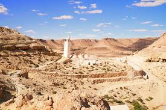


3.Ksar Ghilane
Une oasis saharienne célèbre, offrant une expérience unique de désert.
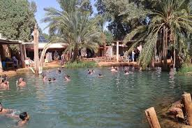
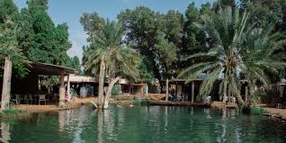
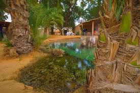
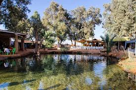
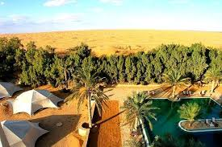
- Pizzeria Al Baraka : Très appréciée pour ses sandwichs libanais, ses pizzas de qualité et son service aimable.
- Restaurant Sindbad: Situé au centre-ville, il est considéré comme l'un des meilleurs du centre-ville, offrant une bonne qualité de plats tunisiens et méditerranéens.
- Restaurant Margoum : Un lieu familial proposant une cuisine tunisienne authentique, notamment un excellent couscous et des pâtes délicieuses.
- Patisserie Al Bacha : Bien qu'étant une pâtisserie, elle est un lieu idéal pour prendre un café et déguster l'une des meilleures spécialités locales, la "corne de gazelle".
- Tej Royal : Réputé pour son excellent café, son ambiance chaleureuse et sa décoration agréable. On y sert aussi de délicieuses omelettes pour le petit-déjeuner.
- Karting café Tataouine : Un endroit plus décontracté qui combine un café et une activité de karting de loisir, souvent noté pour son atmosphère vibrante.